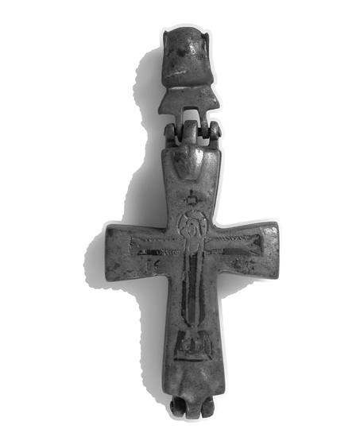
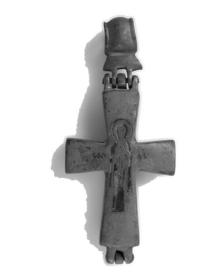

Catalog › CE-0575 · COM2026-60953247
Cruce-relicvar de aliaj de cupru cu niello, Metropolitan Museum 26.15
sec. IX–XII (801–1200) · loc necunoscut · Metropolitan Museum of Art, New York, inv. 26.15
double-sided reliquary cross (enkolpion), altul; c. IX–XII (801–1200); find spot unknown; kept at Metropolitan Museum of Art, New York.




Identificare
- Categorie
- Encolpion bivalv (relicvar)
- Material
- Altul
- Tehnică
- Niello
- Dimensiuni
- Î 95 × L 41 × Gr 12 mm
Iconografie
- Descriere avers
- Hristos răstignit (titlul muzeului: Reliquary Cross with Christ Crucified and the Virgin and Child).
- Descriere revers
- Maica Domnului cu Pruncul (după titlul muzeului).
Datare și atribuire
- Datare
- sec. IX–XII (801–1200)
Descoperire
- Context
- Colecție (fără context)
- Coordonate
- 40.7794° N, -73.9632° E
- Precizia locului
- Loc de păstrare (loc de descoperire incert)
Păstrare și referințe
- Colecție
- Metropolitan Museum of Art, New York
- Nr. inventar
- 26.15
- Bibliografie
- Fotografie: Metropolitan Museum of Art (Open Access), Wikimedia Commons, licență CC0, https://commons.wikimedia.org/?curid=60953247 (accesat 17.10.2026). Sursa muzeului: https://www.metmuseum.org/art/collection/search/466630
- Figura
- Wikimedia Commons, pagina 60953247
- Observații
- Material după muzeu: aliaj de cupru, niello. Credit line: Rogers Fund, 1926. Dimensiuni totale, cu inel. Fotografia reverului: pagina Commons 60953250; altă vedere: 60953253. Fața cu Răstignirea este luată ca avers. Locul descoperirii nu e cunoscut cu precizie; punctul de pe hartă marchează locul de păstrare (Metropolitan Museum of Art), nu locul descoperirii. Coordonate: nu sunt date în sursă.
Citare: Corpus Encolpiorum, CE-0575, Cruce-relicvar de aliaj de cupru cu niello, Metropolitan Museum 26.15, --root/piese/COM2026-60953247/ (accesat 2026-10-20).